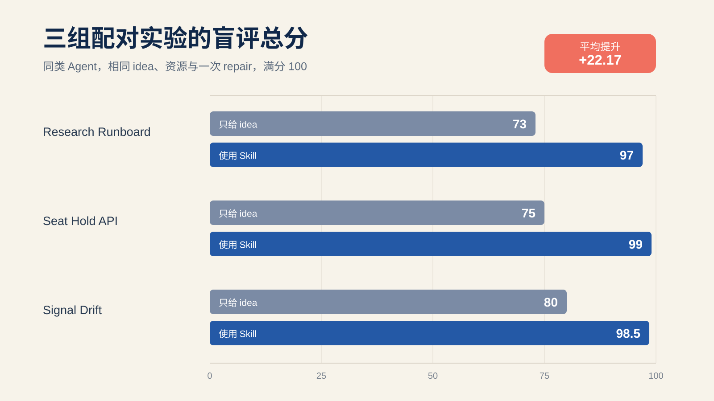

只给 idea 和先写 spec，盲评平均差了 22.17 分
一句清楚的 idea，仍然留着很多没说出口的产品选择。
`AGENTS.md`、当前文档、Agent Notes 和测试各管一类事实。
同一类 Agent、相同 idea 与资源、同样只有一次 repair。

从一个一周内能做完、产品含义又有歧义的 feature 开始。
记录批准前发现的歧义、first-pass failure 和独立 review 仍发现的偏差。
三组 case 不能代表所有模型和项目，完整证据已经放进仓库。
Skill、采用指南、六套源码、冻结 oracle、盲评与截图都可以复查。